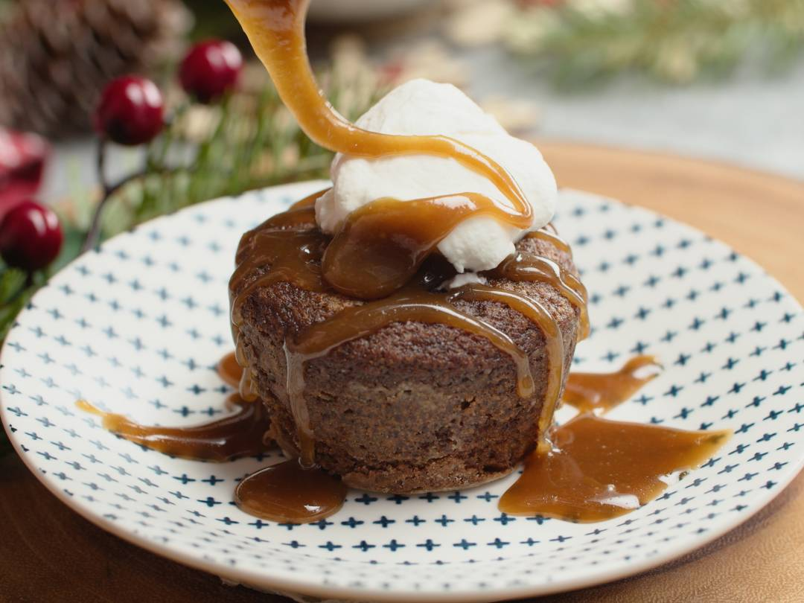

Pudding
Back to home

Sticky toffee pudding
Sticky toffee pudding is a classic British dessert that's easier to make
than you think. Serve warm with cream, ice cream, or custard for a
delicious, crowd-pleasing dessert. The sponge cake includes finely chopped
dates which make it super moist but it doesn't taste of dates at all!
Sticky Toffee Pudding Ingredients
Here's what you'll need for this delicious pudding:
- 1 ½ cups finely chopped, pitted dates
- 1 ¼ cups hot brewed tea
- ¾ cup white sugar
- 2 tablespoons white sugar
- ½ cup unsalted butter, softened
- 3 large eggs
- 2 cups all-purpose flour
- 1 ½ teaspoons baking powder
- 1 teaspoon baking soda
- 1 teaspoon vanilla extract
- 1 teaspoon instant espresso coffee granules
How to Make Sticky Toffee Pudding
Here's a step-by-step recipe for you to follow:
-
Combine dates and tea in a bowl; set aside to soak for 15 minutes.
-
Preheat the oven to 350 degrees F (180 degrees C). Grease an 8-inch
round cake pan and line with parchment paper.
-
Cream 3/4 cups plus 2 tablespoons sugar and butter until light and
fluffy. Beat in eggs, one at a time, mixing well after each addition.
Sift in flour and baking powder and fold into the mixture.
-
Add baking soda, vanilla, and espresso granules to the date-tea mixture.
Add mixture to the batter and stir to produce a loose, soft, dropping
consistency. Pour into the prepared pan.
-
Bake in the preheated oven until a skewer inserted in the center comes
out clean, 1 to 1 1/2 hours.
-
When pudding is almost finished baking, combine 1/2 cup plus 1
tablespoon sugar, 3/4 cup plus 1 tablespoon brown sugar, 3/4 cup plus 1
tablespoon golden syrup, and butter for the sauce in a heavy saucepan
over low heat until melted. Simmer for 5 minutes, then remove from heat.
Gradually stir in cream and vanilla. Return to the heat and stir until
smooth, 2 to 3 minutes.
-
Remove pudding from the oven. Spoon a little sauce onto each serving
plate. Place a portion of pudding on top, then pour over more sauce.
Serve remaining sauce on the side.